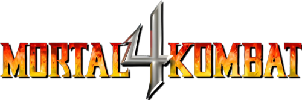

Move List/Bios - Arcade/Home (Universal)
You can e-mail corrections/additions to The Webmaster
Last updated: 01/31/25
It's recommended that your controls match the default setting.
Key:
U = Up/Jump
D = Down/Crouch
F = Forward/Toward
B = Back/Away
| Universal: HP = High Punch LP = Low Punch HK = High Kick LK = Low Kick BL = Block RN = Run |
PlayStation: HP = ▢ LP = X HK = Δ LK = O BL = R1 RN = L1 Side Step In: L2 Side Step Out: R2 |
Nintendo 64: HP = B LP = A HK = C▲ LK = C► BL = C◄ RN = C▼ Side Step In: L Side Step Out: R |
Close Quarters:
Throw: LP (Close)
Head-Blow: HP (Close)
Knee: HK (Close)
Bone Breaker: LK (Close)
Crouched Moves:
Crouched Block: (D+BL)
Crouched Punch: (D+LP)
Uppercut: (D+HP)
Crouched Low Kick: (D+LK)
Crouched High Kick: (D+HK)
Spin Moves:
Foot Sweep: (B+LK)
Roundhouse Kick: (B+HK)
Aerial Moves:
Flying Punch: (U/UF/UB+LP/HP)
Flying Kick: (U/UF/UB+LK/HK)
Stage Fatalities available: The Prison, Goro's Lair
Fatality Distances Explained:
Close: Right next to your opponent.
Sweep: A couple of steps away (close enough to land a sweep).
Outside Sweep: Just beyond sweep range. (A Roundhouse Kick - (B+HK), usually puts the opponent in what is considered "Outside Sweep.")
Note: (Hold BL) in italics for Fatality inputs means BL is optional. You do not need to hold BL to make the Fatality work, although it may be easier if you do.
Tip: If you're having trouble pulling off Fatalities, specifically ones that use "Up" in their input, try getting into the correct distance, jumping up, and then inputting the correct Fatality input (minus holding BL), while you're in the air. (After Finish Him/Her.)
Fujin
Bio:
Better known as the god of wind, Fujin joins Raiden as one of the last surviving gods of Earth. Their counterparts were defeated in a war of the heavens between Shinnok's forces and the elder gods. He now prepares for the final battle between the forces
of light and Shinnok's hell-spawned warriors of darkness.
Special Moves:
Whirlwind Spin: F, D, LP (Hold LP to spin, B/F to move)
Dive Kick: (D+LK) (In air)
Rising Knee: D, F, HK
Tornado Lift: F, D, F, HP
Slam: B, F, D, LK (After Tornado Lift)
Draw/Throw Weapon:
Crossbow: B, B, LP
Fatalities:
Fatality 1 - Raise and Destroy: (BL+RN) x5 (Outside Sweep)
Fatality 2 - Deadly Winds: (Hold BL), D, F, F, U, (Release BL), BL (Outside Sweep)
Stage Fatalities:
The Prison (Fan): D, D, D, HK (Close)
Goro's Lair (Spikes): B, F, B, HP (Close)
Jarek
Bio:
Believed to be the last member of Kano's klan, the Black Dragon, Jarek is hunted down by Special Forces agent Sonya Blade for crimes against humanity. With the emergence of a much greater evil, Sonya focuses her strength on the new menacing Quan Chi. Jarek
now finds himself fighting alongside Sonya and Earth's warriors to help defeat the evil elder god, Shinnok.
Special Moves:
Tri-Blade: D, B, LP
Cannonball Roll: B, F, LK
Vertical Roll: F, D, F, HP
Ground Shaker: B, D, B, HK
Draw/Throw Weapon:
Curved Sword: F, F, HP
Fatalities:
Fatality 1 - Heart Rip: F, B, F, F, LK (Close)
Fatality 2 - Eye Lasers: (Hold BL), U, U, F, F, (Release BL), BL (Outside Sweep)
Stage Fatalities:
The Prison (Fan): F, D, F, HK (Close)
Goro's Lair (Spikes): B, F, F, LP (Close)
Jax
Bio:
When Sonya disappears while tracking the last living member of the Black Dragon, Major Jackson Briggs heads after her. He soon finds that Sonya's mission has led her into a battle with the forces of an evil elder god. This is a battle they must win, or
their own world will crumble at the hands of Shinnok.
Special Moves:
Fireball: D, F, LP
Ground Wave: F, F, D, LK
Dash Punch: D, B, LP
Backbreaker: BL (In Air, Close)
Multi-Slam:
1st Slam: LP (Close),
2nd Slam: (HK+BL+RN),
3rd Slam: (LP+HP+LK),
4th Slam: (HP+LK+BL),
5th Slam: (LP+HP+LK+HK)
Draw/Throw Weapon:
Spiked Club: D, F, HP
Fatalities:
Fatality 1 - Arm Rip: (Hold LK 3 sec.), F, F, D, F, (Release LK) (Close)
Fatality 2 - Head Smash: B, F, F, D, BL (Close)
Stage Fatalities:
The Prison (Fan): F, F, B, LK (Close)
Goro's Lair (Spikes): F, F, B, HP (Close)
Johnny Cage
Bio:
After Shao Kahn's defeat, Cage's soul is free to leave for a higher place. From the heavens, he observes his friends once again engaged in battle. When he learns of the war waged against the elder gods by Shinnok, Cage seeks out Raiden to help him restore
his deceased soul and join Liu Kang in his quest. Once again, Johnny Cage finds himself fighting alongside Earth's warriors.
Special Moves:
Low Green Orb: D, B, LP
High Green Orb: D, F, HP
Shadow Kick: B, F, LK
Split Punch: (LP+BL) (Does not work against Females)
Shadow Uppercut: B, D, B, HP
Draw/Throw Weapon:
Broadsword: F, D, F, LK
Fatalities:
Fatality 1 - Torso Rip: F, B, D, D, HK (Close)
Fatality 2 - Decap Uppercut: D, D, F, D, BL (Close)
Stage Fatalities:
The Prison (Fan): D, F, F, HK (Close)
Goro's Lair (Spikes): B, F, F, LK (Close)
Kai
Bio:
A former member of the White Lotus Society, Kai learned his skills from the great masters throughout Asia. He journeyed to the Far East after meeting his friend and ally, Liu Kang, in America. Now, they reunite to assist Raiden in his battle with Shinnok.
Special Moves:
Falling Fireball: B, B, HP
Rising Fireball: F, F, LP (Also in Air)
Air Fist: D, F, HP
Super Roundhouse: D, F, LK
Handstand: (LK+BL)
(Hold LP to Spin, B/F to move)
(Hard Kick: HK)
(Weak Kick: LK)
(BL to return to feet)
Draw/Throw Weapon:
Kali Dagger: D, B, LP
Fatalities:
Fatality 1 - Backbreaker: (Hold BL), U, F, U, B, HK (Close)
Fatality 2 - Headshot: (Hold BL), U, U, U, D, (Release BL), BL (Outside Sweep)
Stage Fatalities:
The Prison (Fan): F, F, D, BL (Close)
Goro's Lair (Spikes): B, F, D, HK (Close)
Liu Kang
Bio:
Still the immortal champion of Mortal Kombat, Liu Kang finds himself venturing into the realm of Edenia to rescue the princess Kitana from the vile clutches of Quan Chi. Unsuccessful in his mission, Liu returns to Earth and mounts an effort to bring together
Earth's greatest warriors. He does it this time not only to free Kitana's home world but also to assist his mentor and Earth's protector - Raiden.
Special Moves:
High Fireball: F, F, HP (Also in Air)
Low Fireball: F, F, LP
Flying Kick: F, F, HK
Bicycle Kick: (Hold LK 3 sec.), (Release LK)
Draw/Throw Weapon:
Dragon Sword: B, F, LK
Fatalities:
Fatality 1 - Dragon's Bite: F, F, F, D, (LK+HK+BL) (Sweep)
Fatality 2 - Fire Shot: (Hold BL), F, D, D, U, (Release BL), HP (Close)
Stage Fatalities:
The Prison (Fan): F, F, B, LP (Close)
Goro's Lair (Spikes): F, F, B, HK (Close)
Quan Chi
Bio:
A free-roaming sorcerer, powerful in the black arts, Quan Chi uses his abilities to free the now evil elder god Shinnok from his confines in the Netherrealm. In exchange for his services, Shinnok has granted Quan Chi the position of arch-sorcerer of his
now expanded Netherrealm.
Special Moves:
Flying Skull: F, F, LP
Slide Kick: F, F, HK
Tele-Stomp: F, D, LK
Air Throw: BL (In Air, Close)
Weapon Steal: F, B, HP (When opponent's weapon is drawn)
Draw/Throw Weapon:
Spiked Mace: D, B, HK
Fatalities:
Fatality 1 - Leg Beat-Down: (Hold LK 5 sec.), F, D, F, (Release LK) (Close)
Fatality 2 - Mimic: (Hold BL), U, U, D, D, (Release BL), LP (Outside Sweep)
Stage Fatalities:
The Prison (Fan): F, F, D, HP (Close)
Goro's Lair (Spikes): F, F, B, LK (Close)
Raiden
Bio:
The god of thunder returns to Earth after the defeat of Shao Kahn but finds a new threat when Shinnok's forces, led by Quan Chi, attack the elder gods. With the heavens in disarray, Raiden exists as one of the last gods of Earth. He must come to the aid
of his elders and put an end to the evil, villainous reign of his ancient enemy.
Special Moves:
Lightning Bolt: D, B, LP
Torpedo: F, F, LK (Also in Air)
Teleport: D, U
Draw/Throw Weapon:
War Hammer: F, B, HP
Fatalities:
Fatality 1 - Electrocution: (Hold BL), F, B, U, U, HK (Close)
Fatality 2 - Staff Shock: (Hold BL), D, U, U, U, (Release BL), HP (Close)
Stage Fatalities:
The Prison (Fan): D, F, B, BL (Close)
Goro's Lair (Spikes): F, F, D, LP (Close)
Reiko
Bio:
Once a general in Shinnok's armies, Reiko led the forces of darkness into the battle against the elder gods. Once thought killed during that onslaught, he resurfaces and joins the battle against Earth's forces.
Special Moves:
Shurikens: D, F, LP
Flip Kick: B, D, F, HK
Circular Teleport: B, F, LK
Teleport Slam: D, U (LP/HP/LK/HK to attack after teleport)
(BL when close to throw) (Also in Air)
Draw/Throw Weapon:
Spiked Club: D, B, HP
Fatalities:
Fatality 1 - Thrust Kick: F, D, F, (LP+LK+HK+BL) (Close)
Fatality 2 - Shuriken Frenzy: B, B, D, D, HK (Outside Sweep)
Stage Fatalities:
The Prison (Fan): D, D, B, LP (Close)
Goro's Lair (Spikes): F, F, D, LK (Close)
Reptile
Bio:
A general in Shinnok's army of darkness. Reptile once belonged to an extinct race of reptilian creatures. He was banished to the Netherrealm for committing genocide against several species. Responsible for the death of millions, Reptile is a dangerous
ally to the forces of evil.
Special Moves:
Acid Spit: D, F, HP
Dash Punch: B, F, LP
Super Krawl: B, F, LK
Invisibility: (HK+BL)
Draw/Throw Weapon:
Axe: B, B, LK
Fatalities:
Fatality 1 - Face Chew: (Hold LP+HP+LK+HK), U (Close)
Fatality 2 - Acid Puke: (Hold BL), U, D, D, D, (Release BL), HP (Outside Sweep)
Stage Fatalities:
The Prison (Fan): D, F, F, LP (Close)
Goro's Lair (Spikes): D, D, F, HK (Close)
Scorpion
Bio:
In hopes of gaining Scorpion as a new ally in the war with the elder gods, Quan Chi makes the dead ninja an offer he cannot refuse: life, in exchange for his services as a warrior against the elders. Scorpion accepts but hides under ulterior motives.
Special Moves:
Spear: B, B, LP
Teleport Punch: D, B, HP (Also in Air)
Air Throw: BL (In Air, Close)
Fire Breath: D, F, LP
Draw/Throw Weapon:
Sword: F, F, HK (Sword Spin: D+LP)
Fatalities:
Fatality 1 - Toasty! 3D!: B, F, F, B, BL (Outside Sweep)
Fatality 2 - Scorpion Sting: (Hold BL), B, F, D, U, (Release BL), HP (Close)
Stage Fatalities:
The Prison (Fan): F, D, D, LK (Close)
Goro's Lair (Spikes): B, F, F, LK (Close)
Shinnok (Boss/Selectable)
Bio:
Banished to the Netherrealm for crimes committed against his once fellow elder gods, Shinnok is freed from his confines by Quan Chi. With the aid of a traitor, he then is able to overtake the realm of Edenia. From there, he wages a war against the elder
gods and awaits a chance to enact revenge against the god who banished him there - Raiden.
Special Moves (Impersonations):
Fujin: F, F, B, HK
Jarek: B, B, B, LK
Jax: F, D, F, HK
Johnny Cage: D, D, HP
Kai: F, F, F, LK
Liu Kang: B, B, F, HK
Quan Chi: B, F, B, F, LK
Raiden: D, F, F, HP
Reiko: B, B, B, BL
Reptile: B, B, F, BL
Scorpion: F, B, LP
Sonya: F, D, F, HP
Sub-Zero: D, B, LP
Tanya: B, F, D, BL
Draw/Throw Weapon:
Bladed Staff: B, F, LP
Fatalities:
Fatality 1 - Hell Hand: D, B, F, D, RN (Close)
Fatality 2 - Two Hand Smash: (Hold BL), D, U, U, D, (Release BL), BL (Close)
Stage Fatalities:
The Prison (Fan): D, D, F, HK (Close)
Goro's Lair (Spikes): D, F, B, HP (Close)
Sonya
Bio:
After her journey into the Outworld and Shao Kahn's near destruction of Earth, Sonya becomes a member of Earth's own Outworld Investigation Agency. Her first mission leads her to join Liu Kang on his quest to aid the troubled thunder god, Raiden. She must
survive long enough to warn her government of the new menace brought on by Quan Chi.
Special Moves:
Fireball: D, F, LP
Leg Grab: (D+LP+BL)
Square Wave Punch: F, B, HP
Vertical Bike Kick: B, B, D, HK
Air Throw: BL (In Air, Close)
Front Flip Kick: B, D, F, LK
Draw/Throw Weapon:
Spinning Blades: F, F, LK
Fatalities:
Fatality 1 - Kiss of Death: (Hold BL), D, D, D, U, RN (Sweep)
Fatality 2 - Scissors Split: (Hold BL), U, D, D, U, (Release BL), HK (Outside Sweep)
Stage Fatalities:
The Prison (Fan): D, B, B, HK (Close)
Goro's Lair (Spikes): F, D, F, HP (Close)
Sub-Zero
Bio:
After Shao Kahn's defeat at the hands of Earth's fighters, Sub-Zero's warrior clan known as the Lin Kuei is disbanded. But with the new threat brought on by Quan Chi, the ice warrior once again dons the familiar costume once worn by his brother, the original
Sub-Zero. He also holds secrets passed on to him by his sibling - secrets that could hold the key to stopping Shinnok.
Special Moves:
Ice Blast: D, F, LP
Slide: (LP+LK+BL)
Ice Clone: D, B, LP (Also in Air)
Draw/Throw Weapon:
Ice Wand: D, F, HK (Wand Freeze: B+LP)
Fatalities:
Fatality 1 - Spine Rip: F, B, F, D, (HP+BL+RN) (Close)
Fatality 2 - Ice Shatter: B, B, D, B, HP (Outside Sweep)
Stage Fatalities:
The Prison (Fan): (Hold BL), D, U, U, U, (Release BL), HK (Close)
Goro's Lair (Spikes): D, D, D, LK (Close)
Tanya
Bio:
As the daughter of Edenia's ambassador to new realms, Tanya invites a group of refugees fleeing their own world into the safety of Edenia. But soon after Queen Sindel allows them through the portal, she learns that one of the warriors is none other than
the banished elder god, Shinnok. The portal leads into the pits of the Netherrealm itself, and the once free realm of Edenia is now at the mercy of Shinnok.
Special Moves:
Fireball: D, F, HP
Air Fireball: D, B, LP (In air)
Split Kick: F, D, B, LK
Corkscrew Kick: F, F, LK
Draw/Throw Weapon:
Boomerang: F, F, HK (LP will throw the weapon and make it come back)
Fatalities:
Fatality 1 - Kiss of Deceit: (Hold BL), D, D, U, D, (Release BL), (HP+BL)
(Close)
Fatality 2 - Neck Breaker: D, F, D, F, HK (Close)
Stage Fatalities:
The Prison (Fan): B, F, D, HP (Close)
Goro's Lair (Spikes): F, F, F, LP (Close)
Noob Saibot (Hidden/Unlockable)
Bio:
Noob returns to serve under Shinnok again after aiding the Earth warriors to overthrow Shao Kahn's minion. After a thought successful extermination of Shao Kahn, Noob returns again to serve as a general in Shinnok's army of darkness.
Special Moves:
Fireball: D, F, LP (Also in Air)
Teleport Slam: D, U (LP/HP or LK/HK to attack after teleport)
(BL when close to throw) (Also in Air)
Air Throw: BL (In Air, Close)
Draw/Throw Weapon:
Sickle: F, F, HK
Fatalities:
Fatality 1 - Thrust Kick: (D+HP) (With Fatality 1 cheat on)
Fatality 2 - Ice Shatter: (D+HP) (With Fatality 2 cheat on)
Stage Fatalities:
The Prison (Fan): D, B, B, HK (Close)
Goro's Lair (Spikes): F, D, F, HK (Close)
Play as Noob Saibot:
Successfully complete the game with Reiko.
Enter the 012-012 Kombat Kode in versus mode.
Exit this match and enter the character selection screen.
Choose the HIDDEN icon using RN, keep holding it,
press 

 to highlight Reiko,
to highlight Reiko,
press BL while still holding RN.
Meat (Hidden/Unlockable)
Bio:
N/A
Special Moves:
*Meat uses your previous character's moves*
Draw/Throw Weapon:
*Meat uses your previous character's moves*
Fatalities:
*Meat uses your previous character's moves*
Stage Fatalities:
*Meat uses your previous character's moves*
Play as Meat:
Beat the group mode with all 15 characters, and when you choose your character to continue playing, he will be Meat and he will retain the moves of the character you choose.
Kitana (Hidden/Unlockable)
Kitana can be unlocked on the N64 version of MK4 via GameShark.
Kitana can be unlocked on the PC version of MK4 via downloadable Trainer.
Only Kitana's move list can be assigned to another character on the PlayStation via Code Breaker.
Info:
Kitana was originally planned to be in Mortal Kombat 4 alongside Noob Saibot and Kano, but was replaced by the new character Tanya.
However, Kitana wasn't completely removed from the game - her rendering was still used in Liu Kang's ending, and in the Nintendo 64 and PC versions, players could fight as her through a cheat device.
Her skins color palette was altered to brown, and her outfit color palette was changed to yellow to create Tanya.
Her coding remained in the N64 version and could be accessed with a GameShark, while in the PC version, it could be accessed using a trainer.
Though Kitana's model and textures were deleted from the PlayStation version, her moves were left intact and could be assigned to any character with a Code Breaker.
Special Moves:
Fireball: D, F, LP (Also in Air)
Square Wave Punch: F, B, HP
Draw/Throw Weapon:
Fan (N64) / Bowie Knife (PC): F, F, HK
Fatalities:
Fatality 1 - Torso Rip: F, B, D, D, HK (Close) (or use the cheat menu)
Fatality 2 - Leg Splits: (Hold BL), U, D, D, U, (Release BL), HK (Close) (or use the cheat menu)
Stage Fatalities:
The Prison (Fan): D, B, B, HK (Close)
Goro's Lair (Spikes): F, D, F, HK (Close)
Play as Kitana:
*N64 GameShark Instructions:
1) Enter this code: 800fe293 0010
2) Begin the game and start a match.
3) Select any character. It won't matter which character you select,
he/she will automatically be replaced with Kitana.
4) Once the "Choose your Destiny" screen comes up, choose a tower,
then IMMEDIATELY press all of the buttons so it doesn't zoom up on
the tower. If it does this, the game will freeze and you will be
forced to reset.
5) Kitana does not have a portrait file (select screen image).
The N64 cart will read the memory file to prevent it from crashing.
*PlayStation GameShark Instructions:
1) Enter these three codes:
800aac24 0006 - P2 is Shinnok
800BFD6C 0010 - P1 uses Kitana's Moves
800BFE54 0010 - P2 uses Kitana's Moves
2) Begin the game and start a match.
3) Player 1 can select anyone. It doesn't matter who you select, Kitana's
moves will automatically be given to him/her. Make sure that Player 2
is SHINNOK, otherwise Kitana's moves will not be used for Player 1.
4) As long as Player 2 is Shinnok, Player 1 will use Kitana's moves.
If you do the weapon move (F, F, HK) a Bowie Knife will come out no matter
who Player 1 is physically, even though it plays like Tanya's Boomerang.
5) You CAN use the "Play as Kitana" code (800fe293 0010), but during the
game, the CD crashes when trying to load the portrait file, also known
as the select screen image, which wasn't included on the PSX CD.
Goro (Sub-Boss/Unlockable)
Bio:
The half-human dragon stood as Shang Tsung's protector in the first tournament. Goro took the Mortal Kombat title from the original Kung Lao, only to have it won from him nine generations later by Lao's ancestor, Liu Kang. Seeking revenge, the Shokan prince
has returned from the Outworld to crush Liu Kang in Mortal Kombat...
Special Moves:
Fireball: F, B, HP
Teleport Stomp: F, F, B, HK
Ground Stomp: B, F, D, D, HK
Two Handed Swipe: F, F, HP
Super Uppercut: D, D, HP
Lunge Kick: B, B, HK
Draw/Throw Weapon:
N/A
Fatalities:
Fatality 1: N/A
Fatality 2: N/A
Stage Fatalities:
The Prison (Fan): N/A
Goro's Lair (Spikes): N/A
Play as Goro:
Successfully complete the game with Shinnok.
Enter the character selection screen.
Choose the HIDDEN icon using RN, keep holding it,
press 


 to highlight Shinnok, press BL while still holding
RN.
to highlight Shinnok, press BL while still holding
RN.